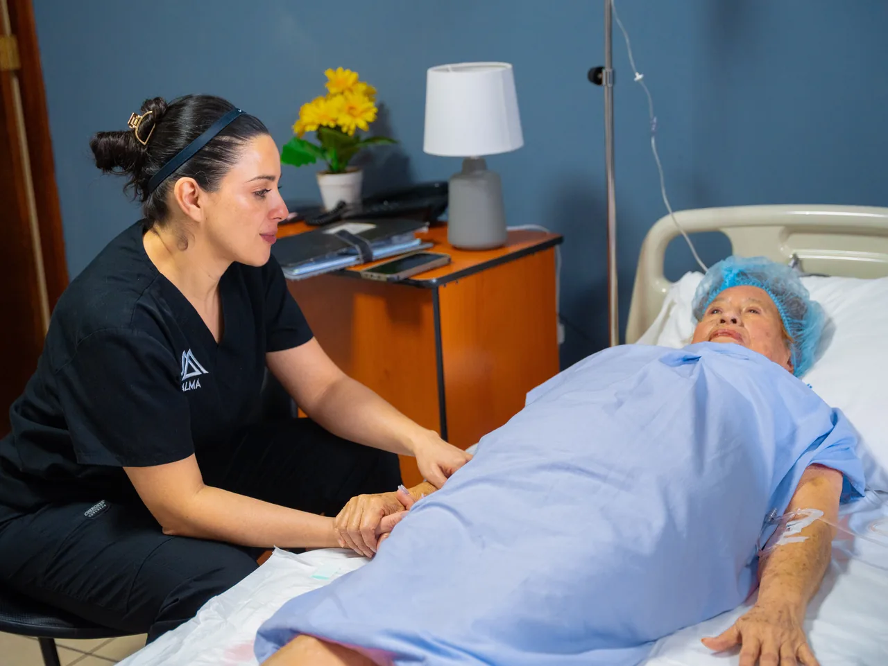

Personal guatemalteco y operaciones de ALMA
Mantiene a coordinadores locales, la logística y el seguimiento de pacientes durante todo el año.
$9,805 recaudadode $20,000
Donar a esto Donar
Sin personal pagado en EE. UU. y con gastos mínimos. Casi cada dólar va directo a la atención en Guatemala.
El viaje de una donación
 La espera
La espera En el altiplano, a muchas familias les dicen que esperen. Las clínicas a menudo no tienen los cirujanos, medicamentos ni instrumentos para ayudar.
 El equipo
El equipo Tu donación ayuda a traer enfermeras, CRNA y cirujanos, y patrocina a voluntarios que de otro modo no podrían venir.
 El quirófano
El quirófano Cirujanos estadounidenses y guatemaltecos operan juntos en el Centro Médico Renacer, con insumos y medicamentos que tu donación provee.

La recuperaciónEnfermeras de recuperación y personal guatemalteco revisan a cada paciente, y el seguimiento local continúa cuando el equipo regresa a casa.
 El regreso a casa
El regreso a casa Una abuela que camina sin dolor. Un padre que puede volver a trabajar. Un niño que puede usar sus manos. Eso hace tu donación.
La historia de Evelinda
Evelinda tenía dos años y medio y nació con los dedos unidos en ambas manos. En 2021, el Dr. Patrick Mullen de Kootenai Health la operó en su primera misión con ALMA. Después, su familia envió videos de su terapia de manos. Esa cirugía fue posible porque personas como tú donaron.
“Te cambia la vida.” · Mike Oswald, CRNA, cofundador de ALMA
¿No se reproduce? Míralo en Google Drive.
Patrocina el trabajo
Cada donación se procesa de forma segura en Givebutter. ALMA es una organización sin fines de lucro 501(c)(3), EIN 83-2378971, así que tu donación es deducible de impuestos en EE. UU.
Financia cirugías, insumos y tiempo de quirófano para una semana completa de misión.
Ayuda a una enfermera, técnico o intérprete a cubrir su cuota para que pueda servir.
Financia la cirugía de cataratas de un paciente que espera volver a ver.
Lo que puede hacer una donación
$100 ayuda a cubrir la anestesia de una cirugía.
Dona ahora en GivebutterLos montos son ejemplos de lo que una donación puede cubrir; ALMA puede confirmar los costos actuales.
Campañas abiertas
Mantiene a coordinadores locales, la logística y el seguimiento de pacientes durante todo el año.
Certificación en Soporte Vital Avanzado en Trauma para un profesional guatemalteco de nuestro equipo.
Para los niños de la Escuela Vuelta Grande.
Hogar Virgen del Socorro, un hogar de rehabilitación física para niños.
Totales de las campañas de ALMA en Givebutter al 22 de noviembre de 2026.
Programas que puedes financiar

La cirugía de cataratas devuelve a los pacientes su independencia y su sustento.
Donar
Chequeos y atención dental para niños que de otro modo no la recibirían.
Donar
Apoyo al Hogar Virgen del Socorro, un hogar de rehabilitación física para niños.
Donar
Útiles y un área de juegos para la Escuela Vuelta Grande, y apoyo a una escuela de educación especial.
DonarCapacitación continua que fortalece a médicos, enfermeras y personal guatemalteco.
DonarBaila por Guatemala
Nuestro evento de 2026 superó por mucho su meta de $25,000. Gracias, Coeur d'Alene. Espera el próximo evento o lleva la misión contigo con artículos de ALMA.